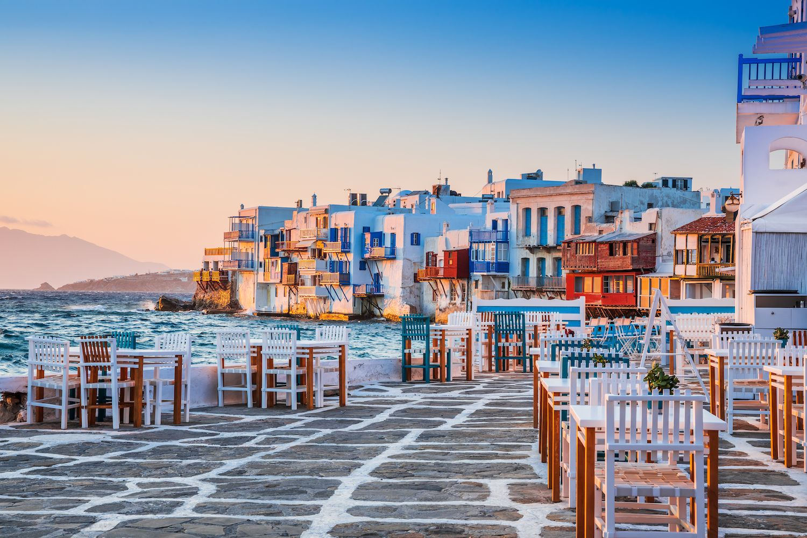
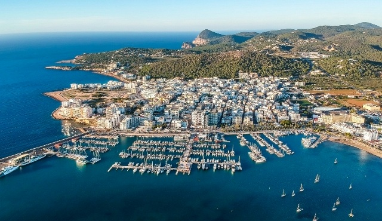

MYKONOS
Mykonos is a Greek island, part of the Cyclades, lying between Tinos, Syros, Paros and Naxos. The island has an area of 85.5 square kilometres and rises to an elevation of 341 metres at its highest point. There are 10,134 inhabitants according to the 2011 census, most of whom live in the largest town, Mykonos, which lies on the west coast. The town is also known as Chora.
ISTANBUL
Istanbul, formerly known as Constantinople, is the largest city in Turkey, serving as the country's economic, cultural and historic hub. The city straddles the Bosporus strait, lying in both Europe and Asia, and has a population of over 15 million residents, comprising 19% of the population of Turkey. Istanbul is the most populous European city, and the world's 15th-largest city.

IBIZA
Ibiza is a Spanish island in the Mediterranean Sea off the eastern coast of the Iberian Peninsula. It is 150 kilometres from the city of Valencia. It is the third largest of the Balearic Islands, in Spain. Its largest settlements are Ibiza Town, Santa Eulària des Riu, and Sant Antoni de Portmany. Its highest point, called Sa Talaiassa, is 475 metres above sea level.
